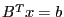
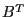

Next: GRBBinvColj Up: Advanced simplex routines Previous: GRBFSolve
| int | GRBBSolve ( | GRBmodel | *model, |
| GRBsvec | *b, | ||
| GRBsvec | *x ) |
Computes the solution to the linear system , where 
is the transpose of the current simplex basis matrix,  is an
input vector, and
is an
input vector, and  is the result vector.
is the result vector.
Return value:
A non-zero return value indicates that a problem occurred while computing the desired vector. Refer to the Error Code table for a list of possible return values. Details on the error can be obtained by calling GRBgeterrormsg.
Arguments:
model: The model. Note that the model must have a current optimal basis, as computed by GRBoptimize.
b: The sparse right-hand side vector. It should contain one entry for each non-zero value in the input.
x: The sparse result vector. The user is responsible for allocating the ind and val fields to be large enough to hold as many as one non-zero entry per constraint in the model.